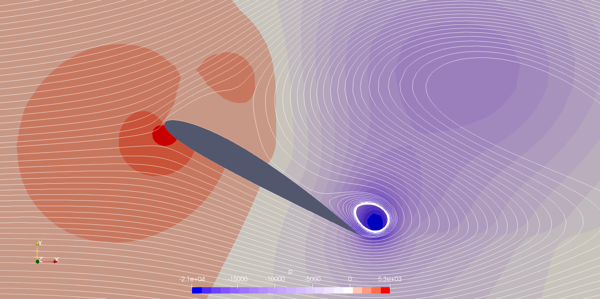

NACA 2412 Airfoil CFD Analysis
- Ran a steady RANS (k-ω SST) angle-of-attack sweep on a NACA 2412 airfoil from 0° to 45° in OpenFOAM
- Captured the full stall progression — attached flow, near-stall suction peak, deep stall, and bluff-body vortex shedding
- Diagnosed the steady solver's convergence breakdown at high AoA and identified the correct follow-up solver

Aircraft Wing Structural Analysis
- Modeled full wing assembly in Fusion 360 — spars, ribs, stringers, and skin panels
- Transferred geometry to FEMAP, applied aerodynamic loading, and solved with NX Nastran
- Validated mesh quality with Jacobian > 0.6; confirmed 0.15 in peak tip displacement
- Identified front spar root as peak stress location, consistent with cantilever bending theory

Aircraft Stability & Control Simulation
- Built a closed-loop 6-DOF flight simulation in MATLAB/Simulink from computed stability and control derivatives
- Validated pitch, roll, and yaw mode eigenvalues against prescribed damping and frequency specifications
- Exported maneuver trajectories to FlightGear for real-time 3D visualization of simulated flight

LEGO Airplane Design & Engineering Documentation
- Designed a twin-engine LEGO airplane in BrickLink Studio with T-tail empennage and tricycle landing gear, selecting parts from the full LEGO library to approximate real aircraft geometry
- Produced a 17-page SolidWorks engineering drawing package with multiview orthographic projections, dimensional annotations, and ANSI-standard title blocks
- Generated a photorealistic rendering of the completed model composited over a runway background